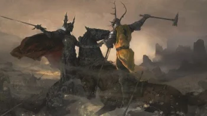
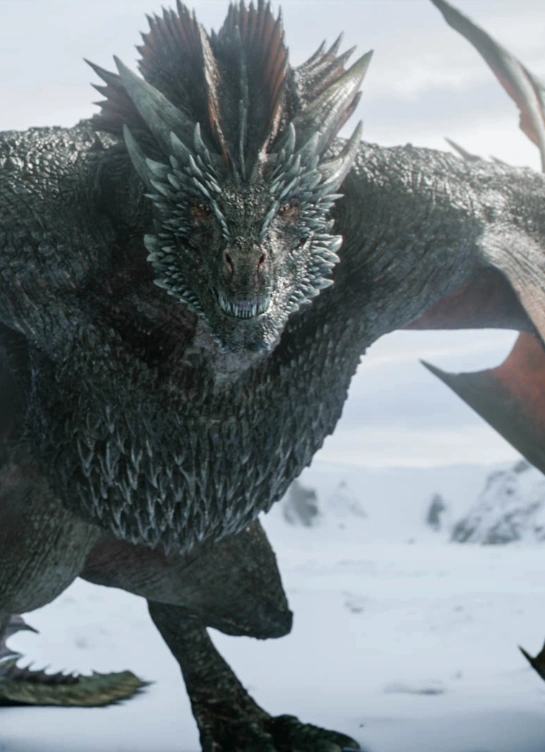

Never marrys Ramsay Bolton in the book. Jane poole does but her storyline follows the same as Sansas show storyline
Marrys a Lannister bannermans daughter Jeyne Westerling, which adds more tension to breaking his pact with the Freys
In the show she dies in the red wedding and her storyline ends there. In the books she is resurrected 3 days after her death and leads the Brotherhood without Banners to seek revenge on the Lannisters and Freys. Because she was dead for too long she is a bit evil and very unlike orginal Catelyn
Gendry and Edric Storm's storylines are combined in the show. In the books Edric goes with Melisandre and Gendry stays with the Brotherhood without Banners. But both of them are Robert Baratheons bastards
Not in the show but he is either Rhaegar's belived to dead son, a blackfire, or is lying. He is set to be a larger player in the coming books and is a potential to claim the Iron Throne. Currently he is on the way to introduce himself to Daenerys
The Martell's are much bigger players in the books and are almost completely cut from the show except for The Red Viper. In the books they are making their own play for the throne, have many characters with active chapters, and relate to many characters that are cut out of the show like Darkstar

R+L=J, Hodor and "Hold the door", Shireen Baratheon is sacrificed
Season 1 and Book 1 are almost the same
Red Wedding
Daenerys taking large cities in Essos
Daenerys riding Drogon out of the fighting pits
Battle of the Blackwater
Septors gaining power in Kings Landing
Much smaller still in the books and all three dragons are alive
